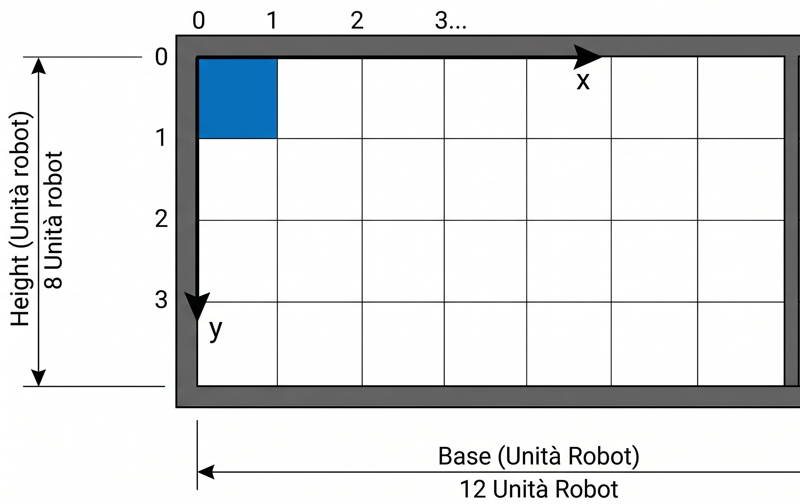

GIT repo: https://github.com/GregorioBussolari/iss2026Unibo.git
GIT repo: https://github.com/GregorioBussolari/iss2026Unibo.git 
System ddrsystem
Context ctxddrsys ip [ host="localhost" port=8040 ]
QActor mind context ctxddrsys {
[#
var H //altezza della stanza in unità robotiche
var B //base della stanza in unità robotiche
var HOME_X = 1 //limite area HOME in unità robotiche
var HOME_Y = 1 //limite area HOME in unità robotiche
val DMIN // distanza minima in unità robotiche
#]
State s0 initial{
//gestione del movimento del ddr
}
}
//modello ad evento periodico
event radar : distanza (D) //distanza in metri
//modello a request/response
Request getdistance : getdistance(X) //richiesta distanza attuale
Reply currentdistance : currentdistance(D) //risposta radar, distanza
// QActor ddrsystem
QActor radar context ctxddrsys {
[# var D #] //distanza rilevata in metri
State s0 initial{
//gestione della comunicazione con qactor ddr, segnalazione distanza
}
}
GIT repo: https://github.com/GregorioBussolari/iss2026Unibo.git